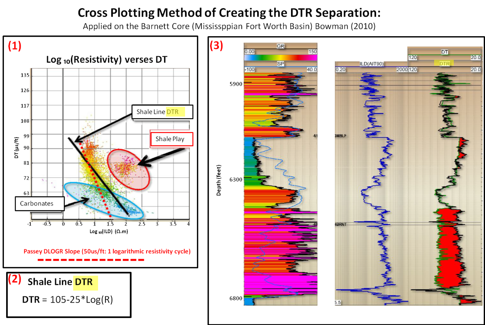
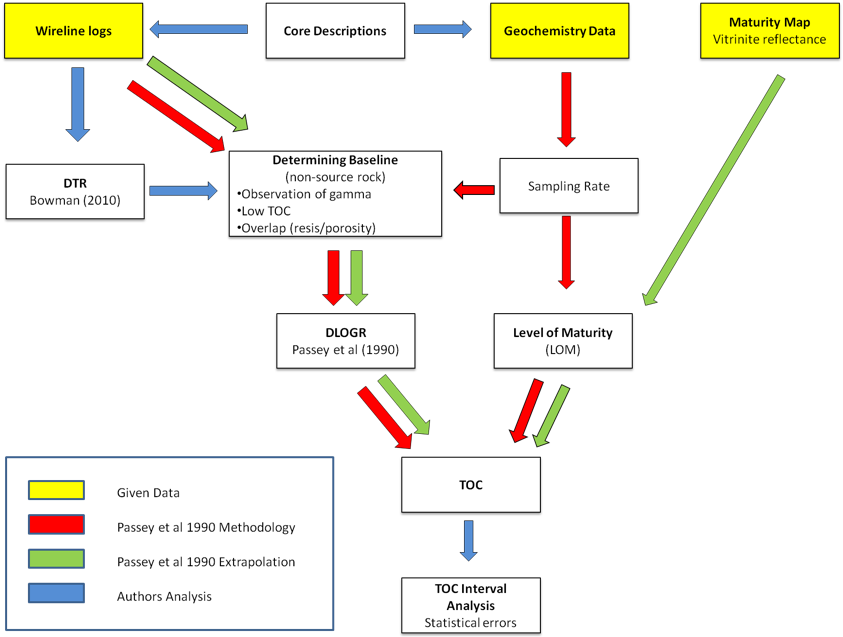
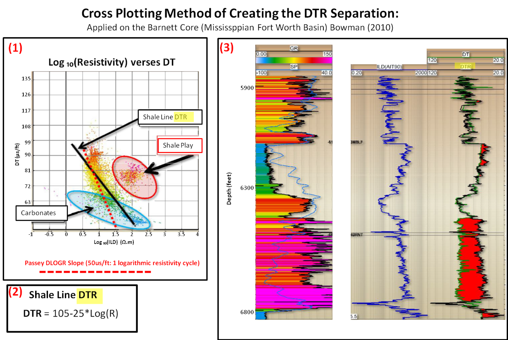
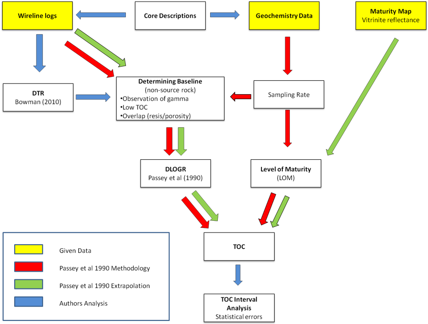
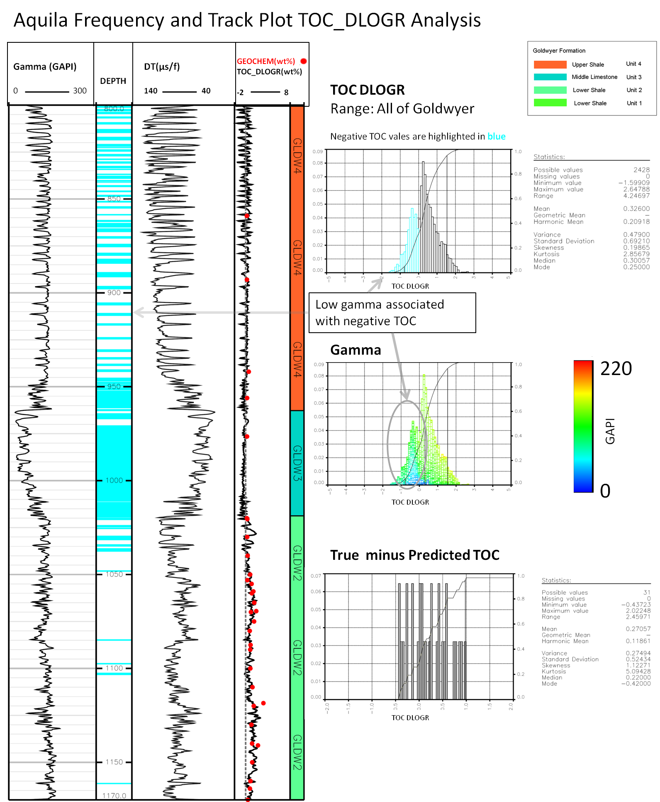
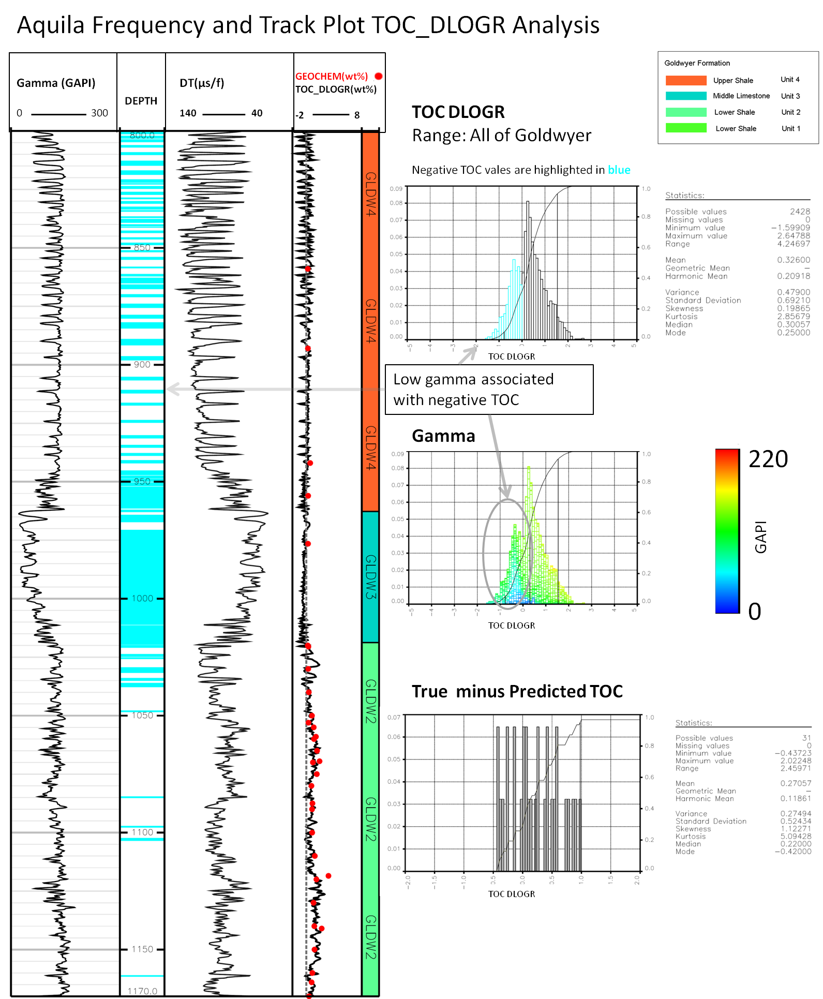

Petroluem Geoscience
Geology and Geophysics
Structural Geology And Geomechanics
Structural And Stratigraphic-Focused Interpretation Of 3D Seismic Data
Basin Analysis
Contemporary And Ancient Reservoir Analogues For Continental, Marginal Marine And Deep-Water Environments
Shallow Diagenetic Processes
Deep-Water Depositional Processes’ Bio-Mediation
Deep Coal Deposits’ Geology And Resource Potential
Carbon Dioxide Capture And Storage In Geological Reservoirs
Continental Strata Correlation And Sequence Stratigraphy
4D Geological Modelling.
Petroleum Geoscience Work Is Of Particular Value In Relation To:
Petroleum Exploration And Development
Carbon Capture And Storage
Engineered Geothermal Systems
Sedimentary Basin-Hosted Mineral Deposits
Groundwater Use And Extraction
Shallow And Deep Coal-Seam Gas Production
Thesis
Unconventional Source Rock Potential of the Goldwyer Formation, Canning Basin, Western Australia: Application of the Delta Log R Technique
Michael Wenz B Sc (The University of Adelaide) This thesis is submitted in partial fulfilment of the requirements for the Honours Degree of Bachelor of Science (Petroleum Geology and Geophysics) Australian School of Petroleum The University of Adelaide November 2012
Abstract
The Ordovician Goldwyer Formation in the Canning Basin is considered a favourable unconventional hydrocarbon target. This project concentrates on the use of petrophysical data for evaluating the source rock potentiality within the formation. Due to the advances in drilling methods, unconventional resources have become economically viable. The study of these resources can be done by a petrophysical means and with the integration of geochemistry. Unconventional source rock characterisation has been intensively studied since 2009 from the perspective of accessing unconventional hydrocarbons from the Barnett Shales. Resource evaluation mapping from an observation of the distribution of organic richness is a key component in exploration of unconventional resources. To understand source rock characteristics and organic richness in the Goldwyer Formation through an observation of the values of Total Organic Carbon (TOC), the Delta Log R (DLOGR) technique was used for 12 wells spread across the Canning Basin intersecting the formation. The DLOGR technique can provide an interpolation of continuous (TOC) values over the source rock interval with limited geochemical data and also has the ability to extrapolate to wells without any geochemical sampling. It is derived by creating DLOGR separation through wireline logs and applying an empirical relationship with level of Maturity (LOM) and geochemistry to predict TOC (mentioned by Passey et al. (1990)). This method is especially useful to evaluate TOC distributions for wells with limited or no geochemical data. Prediction of TOC will help in resource evaluation and estimation. The Goldwyer Formation consists of two shale members, an upper member and a lower member comprising two shales. These members are considered source rocks. The upper consists of alternating laminated carbonates and shale source rock in the form of G.prisca, which is considered a shale oil play located in the Barbwire Terrace. The lower shale member consists of interbedded shales, siltstones and claystones, which have been proven to be a shale gas play. Higher TOC values and thicker interval have been observed in the lower shale member spread in the Kidson Sub-Basin and Broom platform. The interval has shown a better quality TOC richness and is associated with a maximum flooding surface in the lower shale member. The DLOGR technique was applied to the wells with the most available geochemical data sampling points. Overall, computing the correlation with the predicted TOC versus true TOC of the upper and lower members demonstrated a good fit to the true TOC values. Negative i TOC values arising from this technique occurred in the upper shale member. These anomalous negative values were created by extreme inflections of the sonic log due to the cyclic nature of the carbonates and shales. Cross plot analysis has been associated with low gamma ray values (in the wells Aquila, Willara, McLarty, Munro, Pictor and Parda) and the negative TOC values. In general, the TOC quality in the wells analysed was significantly low and overall, the source generative potential was low. The methodology of Bowman (2010) was used in conjunction with that of Passey et al. (1990). The method applies the same hypothesis as Passey et al (1990). The DTR separation showed a promising correlation with DLOGR separation in wells which have indicated hydrocarbon in the source rock interval of the formation. This method, incorporating Passey et al. (1990) and Bowman’s (2010) methodologies for unconventional resource assessments could be used for the development of unconventional exploration. The method, while successful most times a few areas may not always be applicable, as it has not worked in some areas and has led to some incorrect assumptions.Images from Thesis
 




 
Conclusions
1. Given there is potential for unconventional plays to be found and develop Australia, the Ordovician Goldwyer Formation has been of recent interest. Application of the DLOGR Technique can evaluate the TOC distributions. The key objective was to apply Passey et al.’s (1990) methodology and to see if it was applicable to the Canning Basin, which turned out to be so. The deviation of error in computing TOC_DLOGR was not large. However, the available geochemical data demonstrated that most of the TOC content is also low (<0.5%). Seen diagrammatically and statistically the TOC_DLOGR matched true TOC to a fair degree with the each wells the technique been applied for. The of the predicted verse true graphs correlation coefficient were 0.662 and 0.635 for the upper shale and lower shale member respectively. The TOC samples contained bitumen and contaminates which could have affected the statistics.
2. Cycles of the carbonates have been correlated with the negative TOC_DLOGR values. The low gamma ray values are matching with the carbonates however the upper shale unit in Dodonea-1 did not apply to this observation.
3. Bowman’s (2010) cross plotting method also has worked with the Passey et al.’s (1990) methodology of interpreting potential shale resource plays. Bowman’s (2010) synthetic DTR applies the gradient of the resistivity log and when created mimics the same responses like the resistivity log used in the DLOGR technique. The DTR separation is similar to the DLOGR separation. McLarty well did not apply to this observation.
4. Upper shale members considered to be deposited from intertidal conditions. High amounts of G.prisca has been associated potentially as a shale oil play, along the Barbwire Terrace and potentially in the Willara Sub-basin.
5. Lower shale member consists of deep marine shales, siltstone claystone low TOC 0.2-5% amounts of organic matter, however there is a thick interval considered to be a shale gas play in the Kidson Sub-basin and Jugurra Terrance. Correlated high TOC values interval with a maximum flooding surface (in the wells: Aquila, Hedonia, Hilltop, McLarty, Munro, Pictor and Parda).